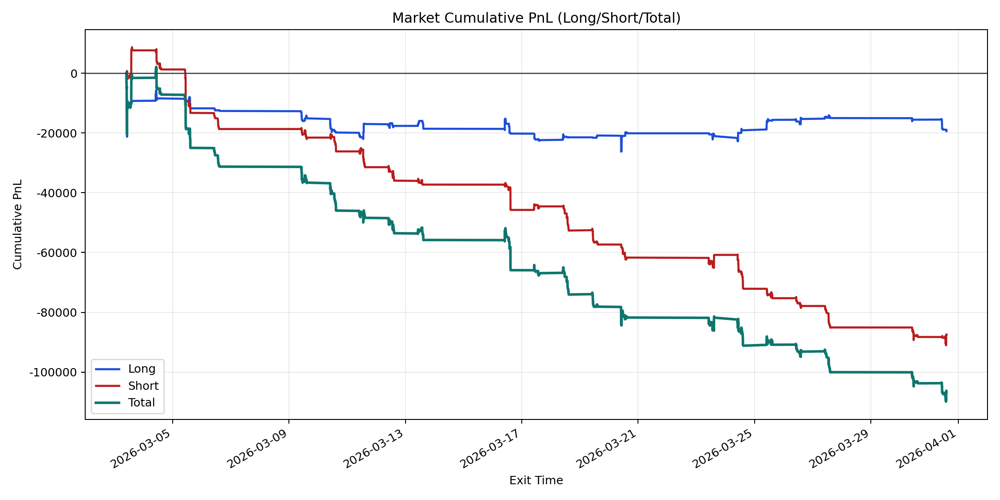
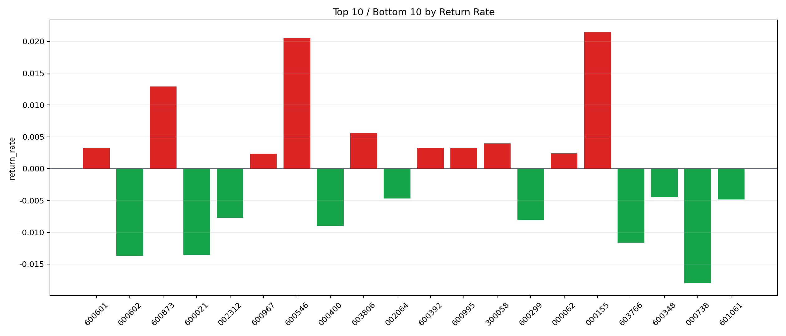

| repo_root | /home/haoranyou/data/output/dynamic_AUM_TAKER_index500 |
|---|---|
| period_months | 1 |
| period_label | 2026-03-03_to_2026-03-31 |
| start_time | 2026-03-03 09:48:52 |
| end_time | 2026-03-31 14:19:37 |
| n_trades | 6164 |
| n_symbols | 93 |
| total_pnl | -106792.9015500002 |
| long_total_pnl | -19350.650549999653 |
| short_total_pnl | -87442.25100000054 |
| total_entry_notional | 110873247.0 |
| long_entry_notional | 34480369.0 |
| short_entry_notional | 76392878.0 |
| total_return_rate | -0.0009631981063024176 |
| long_return_rate | -0.0005612077570863482 |
| short_return_rate | -0.0011446387842594507 |
| top_symbols_by_return | ["000155", "600546", "600873", "603806", "300058", "600392", "600601", "600995", "000062", "600967"] |
| bottom_symbols_by_return | ["000738", "600602", "600021", "603766", "000400", "600299", "002312", "601061", "002064", "600348"] |

